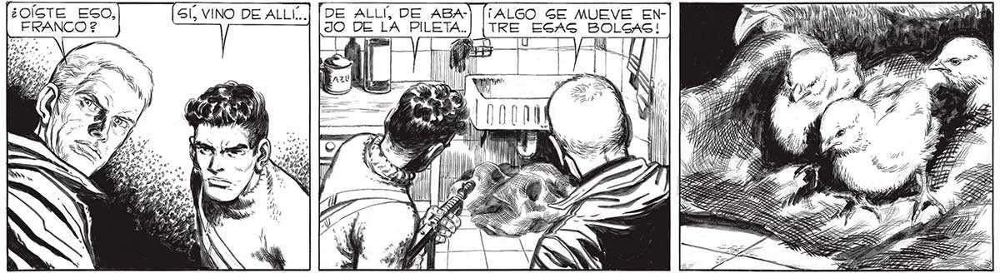

M¿OÍGTE ESO, FRANCO $ 2 ..CON VIDA QUE VEAMOS DESDE LA NEVADA ANIQUIL ADORA... EL PLUMON TIBIO, DORADO,NOS RECORDO DE PRONTO,CON VIOLENCIA DE IMPACTO, CUANTA ERA LA ENORME DIMENSIÓN DEL DESAGTRE QUE NOS RODEABA... Vd A UNÍA DI PS ya Gl, VINO DEALLI..| [DE ALLÍ, DE ABA-] (¡ALGO GE MUEVE ENJO DE LA PILETA.] [TRE ESAS BOLSAS! JAMAS IMAGINE QUE VER TRES POLLITOS ME EMOCIONARIA FUE UNA CAGUALIDAD ENORME QUE GE GALVARAN... ESTARIAN A PUNTO DE SALIR DEL HUEVO CUANDO LA NEVADA... YA NO HACEN FAL-»P_, TA LAS ARMAS... AIN LOG COPOS ANIQUILARON A LA MADRE ... PERO A ELLOS NO,PROTEGIDOS POR EL HUEVO... ¡ TIÉNEN RS ¡MIRA COMO COMEN! ¡ POLLITOS! ¡ESTO SÍ QUE NO LO ESPERABA! > ERA COMO VER FANTAGMAS. ERAN LOG PRIMEROS ANIMALES... WEN ji ALI a ee Dro RUIDO: EL RODAR DE UN VAGO GOBRE LA MESA. EL ESPANTO NOG ELECTRIFICO EL CEREBRO. LA GUERRA HA CONCLUIDO PARA Mí... Sl HUBIERA DESEADO S5EGUIR EL COMBATE, LES HABRÍA ATACADO Y DESTRUIDO, AN-]) TEG SIQUIERA M// DE QUE LO AD-P) VIRTIERAN... | Nh
